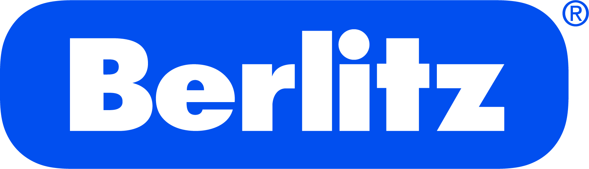
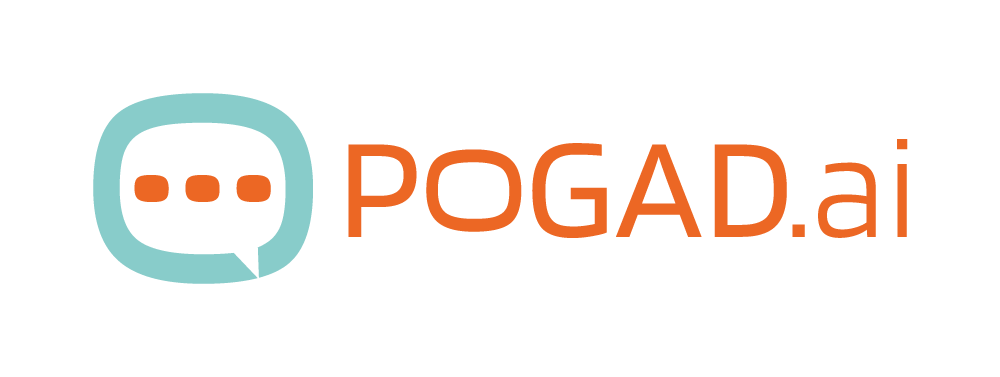
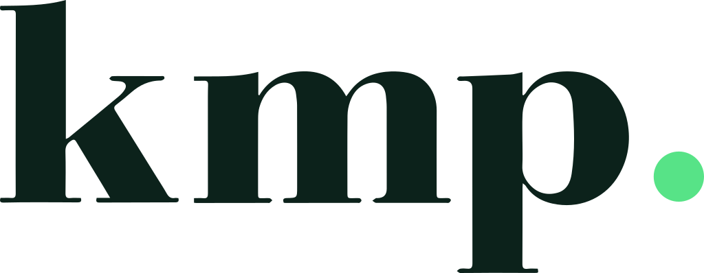

What Talkio looks like outside Korea: our partners around the world, and where we are heading.
November 2026
Talkio outside Korea
From global names like Berlitz to SWAI, the biggest German school in Brazil.
Providers like pogad.ai in Poland and kmp. in Germany, training staff at hundreds of companies.
Universities like the University of Virginia in the United States.
Three kinds of partner, in the Americas and Europe.
Our partners

United States
One of the world’s best-known language schools
United States
A public research university in Virginia
Brazil
The biggest German school in Brazil

Poland
Poland’s biggest language school for businesses

Germany
Corporate language training in more than 30 languages
Five of our more than 40 partners around the world.
Partner · United States
One of the world’s best-known language schools, teaching languages for more than 140 years. Berlitz learners practise speaking with Talkio.
Learners practise real conversations with an AI tutor alongside their Berlitz courses.
Practice built around Berlitz’s own teaching method and content.
Berlitz teaches in language centres and online around the world.
Partner · Brazil
Sprache&Wissen is the biggest German school in Brazil. Its students practise speaking with Talkio through SWAI.
AI speaking practice for learners of German, and of English too.
Learners are guided in Brazilian Portuguese.
The AI tutor is part of Sprache&Wissen’s courses and programmes.
Partner · Poland
TEACHERSteam is the biggest language school in Poland offering training to businesses. With pogad.ai, powered by Talkio, their learners practise speaking with AI.
Language courses for several hundred companies across Poland since 2005.
Employees practise real conversations with an AI tutor alongside their courses.
Learners are guided in Polish, their own language.
Partner · Germany
A corporate language training provider since 1991, working with companies around the world. kmp.’s learners practise speaking with Talkio.
30+
languages trained
1,500+
qualified trainers worldwide
800+
companies supported
50+
industries
Where Talkio is heading
For large organisations, universities and schools: set goals, practise every day and track progress.
Who it is for
Today: kmp. and pogad.ai
Today: University of Virginia
Today: Berlitz and SWAI
Our partners around the world already cover all three. The next step is one product that serves them all.
The people behind Talkio
CEO and CTO
Design lead
Development lead
Developer
Learning designer
Sales lead
Questions, ideas and introductions to new partners are all welcome.
talkio.ai